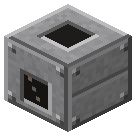

Люк выгрузки
Эпоха 2Пар и механика

стоит

в работе
Вплотную к экскаватору.
Вплотную к экскаватору. Выгружает лицом в сундук или вагонетку. Shift+пустая рука - режим.
Параметры
| Эпоха | 2 — Пар и механика |
|---|---|
| Многоблок | нет |
| Привод | топка / своё |
| что делает | раскладка выкопанного (всё/полезное/отвал) в сундук или вагонетку |
| из чего | воронка, железные листы |
Кого кормит
- машины Zavod её продукт не едят
Как устроено (из кода)
Люк выгрузки экскаватора: ставится вплотную к экскаватору. Экскаватор кладёт в него то, что берёт режим люка: всё / полезное (всё, кроме породы) / отвал (порода: камень, земля, гравий, песок...). Shift + пустая рука - сменить режим. Люк выгружает ЛИЦОМ: в сундук/машину перед собой или в грузовую вагонетку, стоящую перед ним на рельсах. Из люка можно забирать трубами и воронками. Буфер 9 слотов.
Сборка — на странице Паровой экскаватор.